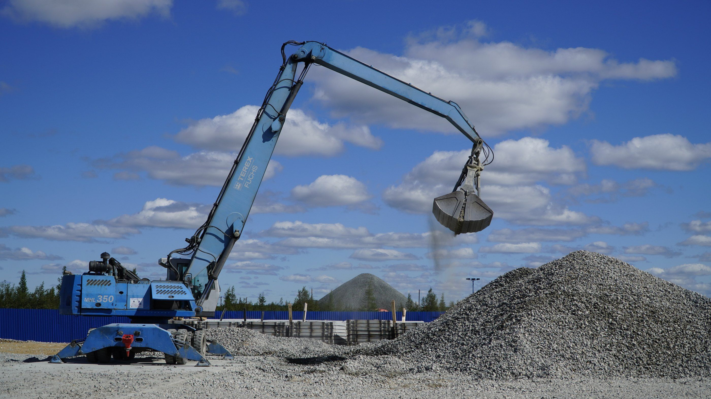
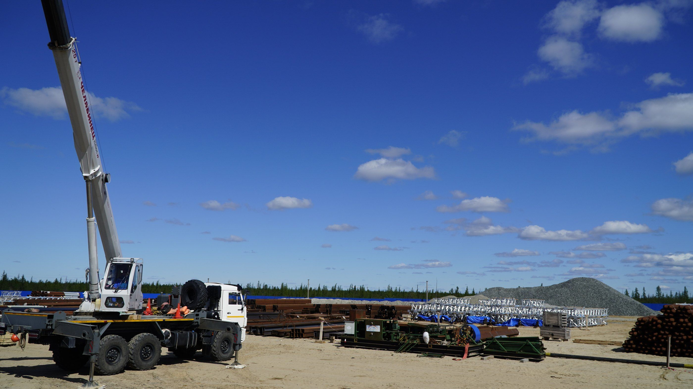
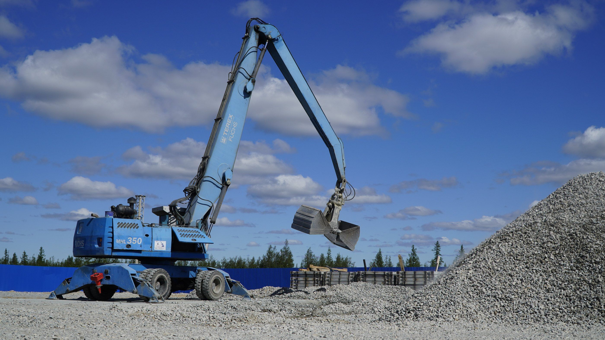
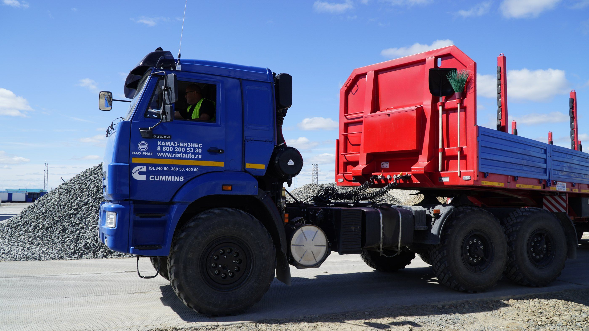
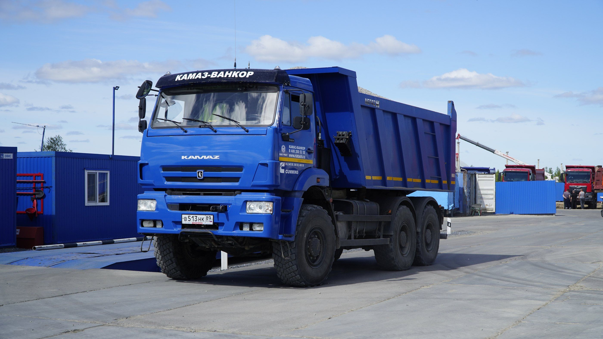
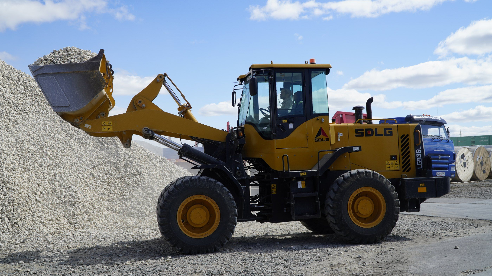

Ст. Еваяха · Новый Уренгой · ЯНАО
Приём вагонов
и хранение грузов
Разгружаем полувагоны, крытые вагоны и платформы на ж/д пути нашей базы, храним тарно-штучные грузы на открытой площадке 23 га под круглосуточной охраной.
- вагонов за одну подачу
- 18
- вагонов в сутки
- 36
- открытая площадка хранения
- 23 га
- охрана и видеонаблюдение
- 24/7
Принимаем: Металлопрокат, Металлоконструкции, ЖБИ, Блочное оборудование, Трубная продукция, Запорная арматура, Кабельно-проводниковая продукция, Цемент, Щебень, Буровые утяжелители, Барит, Минеральный порошок, Хлорид кальция, Известь, Полувагоны, Крытые вагоны, Платформы, Специализированные вагоны.
Услуги
Полный цикл: от вагона до отгрузки
Три услуги на одной базе у станции Еваяха. Можно заказать одну или всю цепочку сразу.
Принимаем составы по 18 вагонов дважды в сутки. Выгружаем сразу на площадку хранения, грузим вагоны на отправку.
Подробнее об услуге «Погрузка и выгрузка вагонов»Открытая охраняемая площадка 23 га, ответственное хранение, ежедневный учёт ТМЦ заказчика.
Подробнее об услуге «Открытый склад и ответственное хранение»Ж/д тупик с охраняемой площадкой для временного хранения любых тарно-штучных грузов.
Подробнее об услуге «Аренда ж/д тупика»


Вагон пришёл на Еваяху — дальше всё делаем мы: выгрузим, сохраним и отгрузим по запросу.

Грузы и вагоны
Принимаем любые тарно-штучные грузы
Вагоны можно отправлять к нам с любой станции России и СНГ — с Урала, из центра, Поволжья, Казахстана. Станция назначения — Еваяха.
Грузы
- Металлопрокат
- Металлоконструкции
- ЖБИ
- Блочное оборудование
- Трубная продукция
- Запорная арматура
- Кабельно-проводниковая продукция
- Цемент
- Щебень
- Буровые утяжелители
- Барит
- Минеральный порошок
- Хлорид кальция
- Известь
Род вагонов
- Полувагоны
- Крытые вагоны
- Платформы
- Специализированные вагоны
Собственный парк спецтехники
20 единиц техники на базе: выгружаем и грузим вагоны, перемещаем и отгружаем грузы своими машинами.

4Автомобильные краны
г/п 25 т

2Перегружатели Fuchs
с грейфером

5Седельные тягачи
г/п 20 т

5Самосвалы
г/п 20 т

2Фронтальные погрузчики
- Фото скоро1
Вилочный погрузчик
г/п 3 т
- Фото скоро1
Телескопический погрузчик
г/п 5 т
Как мы работаем
От станции отправления до отгрузки с базы
- 01
Отправка
Грузите вагоны на любой станции России или СНГ, указав наши отгрузочные реквизиты.
- 02
Приём
Вагоны приходят на станцию Еваяха и подаются на ж/д путь базы в 1000 м от неё.
- 03
Выгрузка
Сразу на открытую площадку хранения, при необходимости — круглосуточно.
- 04
Хранение
Под охраной 24/7, с ежедневным учётом ТМЦ. Первый месяц — бесплатно.
- 05
Отгрузка
Грузим на ваш транспорт или в вагоны на отправку — своей спецтехникой.
База работает ежедневно, включая выходные и праздники. При необходимости разгружаем вагоны круглосуточно.
Частые вопросы
Какие вагоны вы принимаете?
Полувагоны, крытые вагоны, платформы и специализированные вагоны.
Сколько вагонов вы можете принять за сутки?
Одна подача — 18 вагонов. Обрабатываем две подачи в сутки, то есть до 36 вагонов.
Какие грузы вы принимаете на хранение?
Любые тарно-штучные: металлопрокат, металлоконструкции, жби, блочное оборудование, трубная продукция, запорная арматура, кабельно-проводниковая продукция, цемент, щебень, буровые утяжелители, барит, минеральный порошок, хлорид кальция, известь.
С каких станций можно отправлять вагоны?
С любой станции России и СНГ. В документах укажите наши отгрузочные реквизиты: станция назначения — Еваяха, Свердловская ж/д (код 799506), грузополучатель — ООО «ЯЛК».
Далеко ли база от станции?
Ж/д путь базы находится в 1000 м от станции Еваяха.
Работаете ли вы в выходные и праздники?
Да. База работает ежедневно с 08:00 до 20:00, включая выходные и праздники. При необходимости разгружаем вагоны круглосуточно.
Сколько можно хранить груз?
Срок хранения не ограничен. Первый месяц хранения — бесплатно.
Как охраняется груз?
Круглосуточная охрана из двух человек, видеонаблюдение, освещение и ограждение по всему периметру базы. Учёт ТМЦ ведём ежедневно.
Может ли наш персонал работать у вас на базе?
Да, при необходимости предоставляем рабочие места с интернетом для персонала заказчика.
Как узнать стоимость?
Оставьте заявку или позвоните. Для расчёта нужны станция отправления, характер груза и тип вагонов — погрузка и выгрузка крытых вагонов стоит дороже.